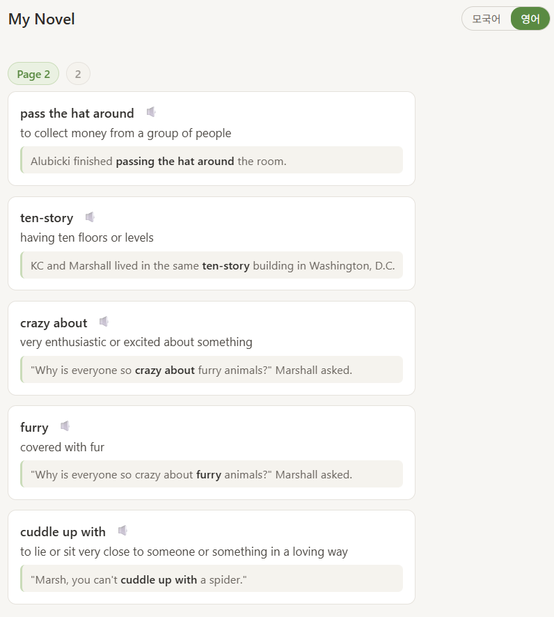

메인화면
⚙️
Reading Tutor
책 페이지 사진들을 올려보세요. 내 영어 레벨에 맞는 학습 단어를 알려주고, 책으로 저장할 수 있습니다.

📂 책 사진 올리기
앞페이지부터 차례로 찍은 사진을 올리세요. 촬영 시각 순서대로 자동 정렬됩니다 (최대 30장).
📚 My Books
텍스트 추출 중...
저장된 책
📚 책으로 저장
◀
▶
책 저장하기
이 책의 제목을 입력하세요
취소
저장
Reading 설정
단어 레벨 설정
* Renaissance STAR Reading 의 GE 점수를 설정하면 사진 검색 AI 자동 추천이 활성화됩니다.
단어 설명 언어
모국어
영어
취소
저장